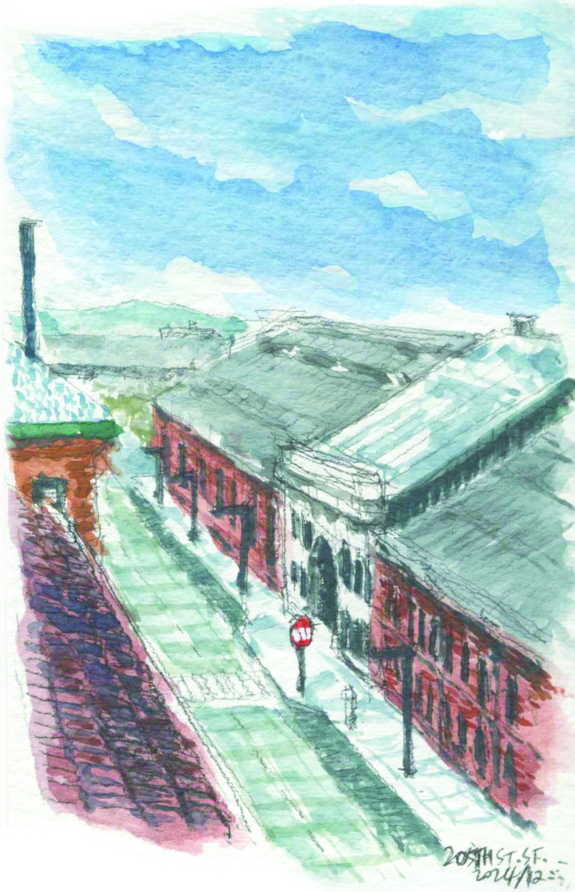

Dogpatch District
The historic Dogpatch neighborhood showcases San Francisco's industrial heritage alongside modern development. Converted warehouses and new construction create an eclectic architectural dialogue. This evolving district maintains its working-class character while embracing contemporary urban growth.